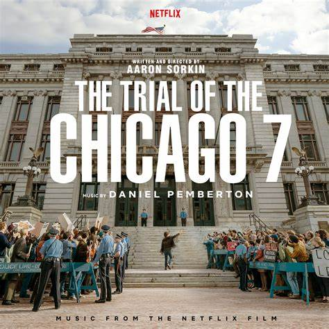
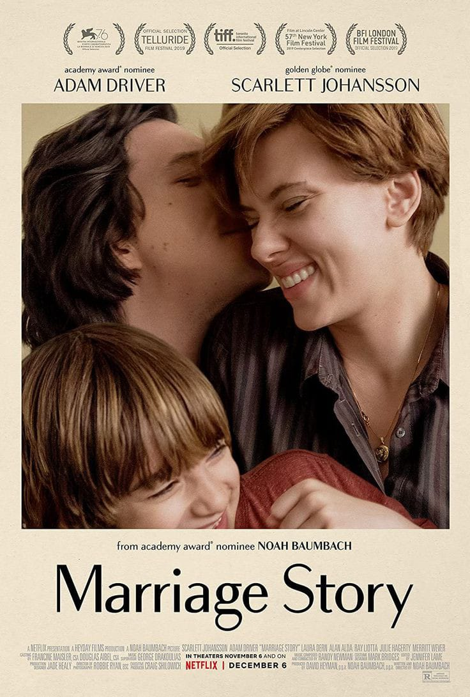

Top 5 Netflix flicks with the highest ratings
Netflix's Fab Five: The Ultimate Ratings Royalty!
1. "The Irishman" (2019)
| Genre | Mafia, Crime Film, Drama |
| Director | Martin Scorsese |
| Runtime | 209 Minutes |
2. "The Trial of the Chicago 7" (2020)
| Genre | History, Drama, Crime |
| Director | Aaron Sorkin |
| Runtime | 128 Minutes |
3. "Marriage Story" (2019) Marriage Story
| Genre | Drama, Romance,Comedy |
| Director | Noah Baumbach |
| Runtime | 136 Minutes |
4. "Roma" (2018) Roma
| Genre | Drama |
| Director | Alfonso Cuaron |
| Runtime | 135 Minutes |
5. "Parasite" (2019) Parasite

| Genre | Thriller, Mystery, Dark Comedy,Drama |
| Director | Bong Joon-ho |
| Runtime | 131 Minutes |